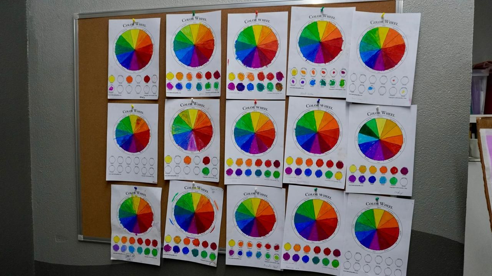
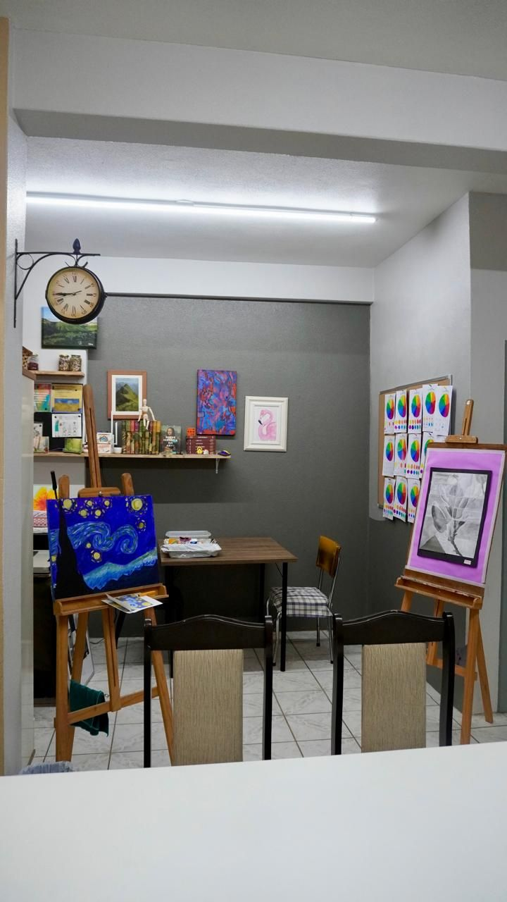
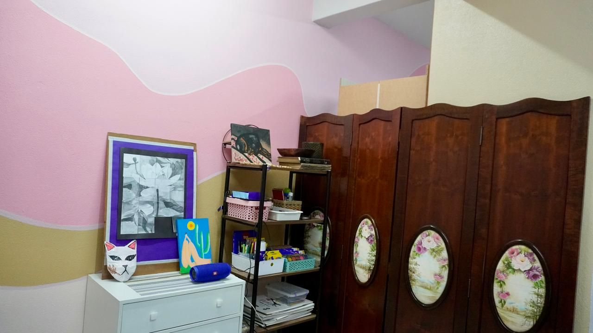
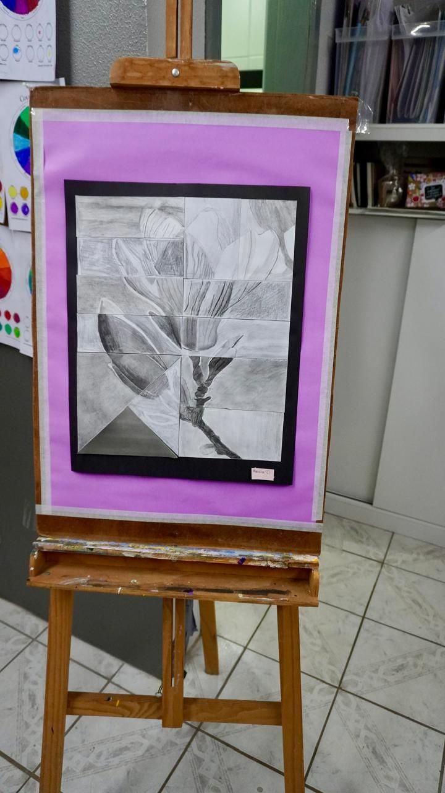
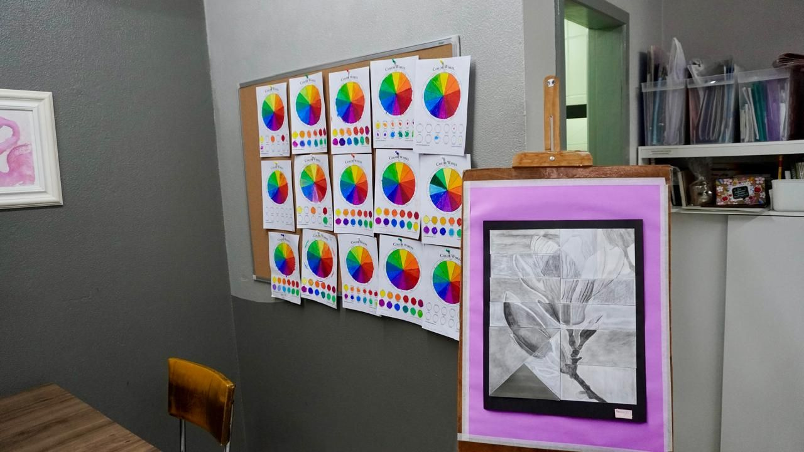
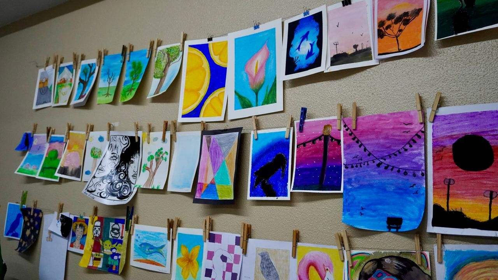

Cores, formas e texturas
Experimentamos as cores e suas misturas, as formas e as texturas de cada material.
Não-Me-Toque · RS
Aulas de desenho e arte para crianças a partir de aproximadamente 7 anos e adolescentes, em turmas pequenas e no turno inverso ao da escola.
Quero saber das vagas

O Ateliê LibertArte é um espaço dedicado ao ensino do desenho e a atividades artísticas para crianças e adolescentes. O ambiente foi preparado para receber pequenos grupos, com uma mesa ampla de desenho e estrutura para atividades práticas.
Aqui, cada trabalho é valorizado como parte de um processo individual. O desenho e a arte são caminhos para descobrir possibilidades, desenvolver habilidades, construir confiança e encontrar formas próprias de expressão, sem a pressão de alcançar um resultado imediato.
O nome LibertArte nasceu dessa ideia: unir liberdade e arte, respeitando o tempo de aprendizagem de cada aluno.
Diferentes técnicas e materiais, em diálogo com a arte, a filosofia e a ciência.

Experimentamos as cores e suas misturas, as formas e as texturas de cada material.

Observamos a biologia de animais e plantas para aprender a ver e a desenhar.

Conhecemos artistas de diferentes épocas e desenvolvemos nossas próprias propostas de criação.
Deslize para o lado para ver mais →
| Turno | Dias | Horário |
|---|---|---|
| Manhã | Quartas e quintas | 10h10 às 11h30 |
| Tarde (1ª turma) | Terças, quartas e quintas | 13h30 às 15h |
| Tarde (2ª turma) | Terças e quartas | 15h20 às 16h50 |
Sempre que possível, as turmas reúnem alunos de idades parecidas. As vagas são limitadas e dependem da disponibilidade de cada turma.
Mande uma mensagem no WhatsApp com o nome, a idade e o turno escolar do aluno.
Valores e disponibilidade são informados diretamente às famílias pelo WhatsApp.

WhatsApp: (54) 99154-3833
Instagram: @atelielibertarte.arte
Endereço: Av. Alto Jacuí, 816 · Edifício Cidade Jardim, sala 207 · Não-Me-Toque, RS
Professora e diretora: Alexandra Braun
Falar pelo WhatsApp